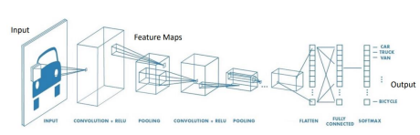
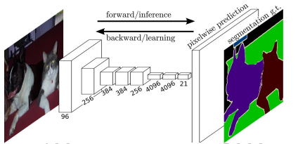
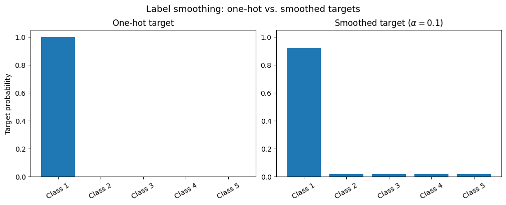
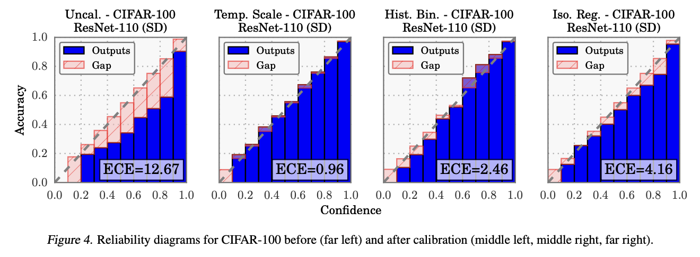
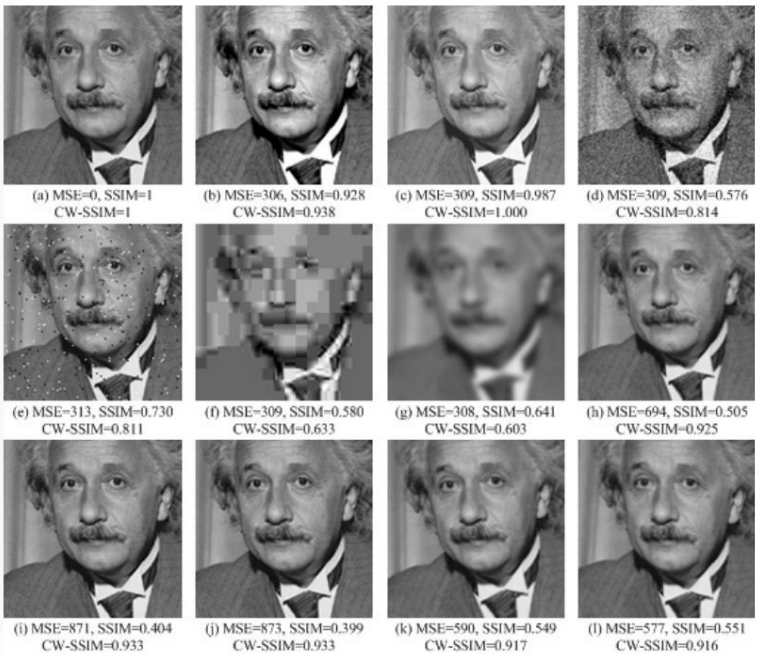
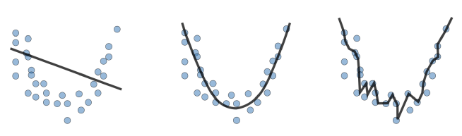
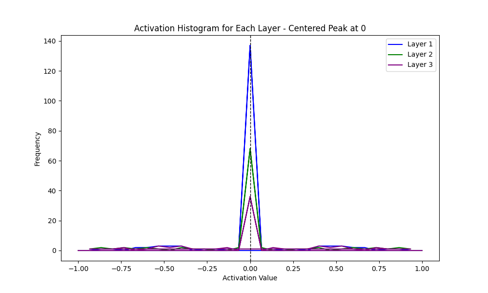
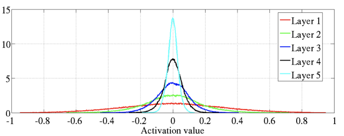
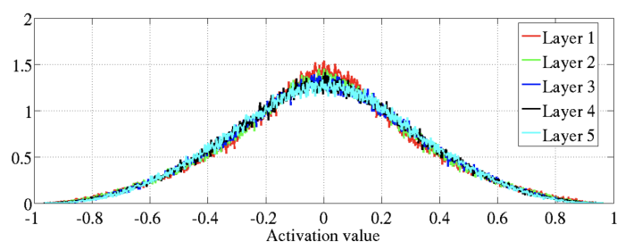

1. Lecture Objectives
In this lecture, we focus on practical best practices for designing, training, evaluating, and debugging deep learning models. We discuss how architectural choices, loss functions, and evaluation metrics influence model performance, and how to handle challenges such as class imbalance and limited data. The lecture also introduces data augmentation, transfer learning, and hyperparameter tuning as strategies for improving generalization. Finally, we explore the role of visualization and diagnostic tools in identifying and resolving common training issues such as underfitting, overfitting, and unstable gradients.
2. Model Architecture Selection
Choosing the right model architecture depends on the nature of the task. This lecture distinguishes between two main types of CNN architectures: those suited for classification and those for dense prediction tasks. Classification architectures produce a single prediction label for the entire image, while dense prediction architecture produces a label for each pixel in the image. Once the best architecture type is determined, it is generally accepted to use pre-trained models available online instead of starting from scratch. PyTorch has a plethora of pre-trained modules for most applications.
2.1 Classification Architectures
Classification CNNs follow a pipeline in which 2D convolutional kernels are stacked across multiple layers to progressively reduce the spatial size of activations while increasing the richness of learned feature representations. As the network depth increases, the model transitions from detecting simple low-level patterns to capturing higher-level semantic features useful for classification.
After the final convolutional layer, the resulting feature maps are flattened and passed through fully connected layers. The network typically concludes with a softmax layer that outputs class probabilities, enabling the model to assign each input image to a specific category.
Careful hyperparameter tuning plays an important role in achieving strong performance. In deeper layers, the number of kernels is often increased to capture more complex patterns. Different pooling strategies, such as max pooling and average pooling, can be explored to balance information retention and dimensionality reduction. Activation functions like ReLU, sigmoid, and variants such as leaky ReLU help introduce nonlinearity and improve training stability. Regularization techniques, including dropout and batch normalization, are commonly used to reduce overfitting. For very deep networks, skip connections—such as those introduced in ResNet—can be incorporated to improve gradient flow and enable more effective training.

2.2 Dense Prediction Architectures
For tasks that require dense, pixel-level outputs—such as image segmentation, super-resolution, depth estimation, and optical flow—fully convolutional architectures are better suited than standard classification CNNs. Unlike classification models that collapse spatial dimensions into a single vector, dense prediction models preserve spatial structure throughout the network so that predictions can be made at every pixel location.
A common design pattern for dense prediction is the encoder–decoder structure. The encoder is similar to a standard classification CNN in that it progressively extracts higher-level feature representations from the input image. However, it does not include fully connected layers, since removing them allows the network to accept variable-sized inputs and maintain spatial correspondence. The encoder typically reduces spatial resolution while increasing the number of feature channels, enabling the model to learn abstract, high-level representations.
The decoder then reconstructs high-resolution outputs from the encoder’s compressed feature representation. This is typically done using upsampling operations such as transposed convolutions (also known as deconvolutions), interpolation followed by convolution, or learned upsampling blocks. The goal is to gradually restore the spatial resolution while refining feature maps to produce accurate pixel-level predictions. In many architectures, skip connections are added between corresponding encoder and decoder layers (e.g., as in U-Net) to help recover fine-grained spatial details lost during downsampling.
Pooling layers are often avoided or used cautiously in dense prediction tasks because they reduce spatial resolution and may degrade fine structural details. Instead, convolutional layers with stride 1 are commonly preferred to preserve resolution. Dilated (atrous) convolutions can also be used to increase the receptive field without reducing spatial dimensions, allowing the network to capture broader contextual information while maintaining high-resolution feature maps.

3. Loss Functions
Choosing an appropriate loss function is essential for effective model training, as the loss defines the objective the network optimizes and directly influences the quality of learned representations.
For classification tasks, the most common choice is cross-entropy loss, which measures the discrepancy between predicted class probabilities and the true labels. This loss encourages the model to assign high probability to the correct class while penalizing incorrect predictions, making it well suited for multi-class classification problems.
For dense prediction tasks, such as image segmentation, losses must operate at the pixel level. Pixel-wise cross-entropy loss is widely used to evaluate classification accuracy for each pixel independently. In addition, the Dice loss is often employed to directly optimize overlap between predicted and ground-truth segmentation masks, making it especially useful when dealing with class imbalance.
For image enhancement tasks, including super-resolution and denoising, reconstruction-based losses are commonly used. Mean Squared Error (MSE) encourages overall pixel-wise fidelity, while L1 loss is often preferred for producing sharper images and reducing excessive smoothing. In practice, these losses are sometimes combined or supplemented with perceptual losses to further improve visual quality.
3.1 Cross-Entropy Loss
Cross-entropy loss is a standard loss function for classification problems and is best used when class imbalance is limited. It measures how well the predicted probability distribution matches the true label distribution.
\[L = - \sum_{i} y_i \log(\hat{y}_i)\]
Here, \(i\) denotes the class index, \(y_i\) represents the ground-truth label for the correct class (typically one-hot encoded), and \(\hat{y}_i\) denotes the softmax probability predicted by the network for class \(i\). The negative sign ensures that the loss decreases as the predicted probability of the correct class increases.
3.2 Mean Squared Error (MSE) Loss
Mean Squared Error (MSE) loss is commonly used for regression tasks and measures the average squared difference between predicted and actual values. Because the error is squared, larger deviations are penalized more heavily, making MSE particularly sensitive to large prediction errors and encouraging the model to reduce large mistakes.
\[L = \frac{1}{N} \sum_{i=1}^{N} (y_i - \hat{y}_i)^2\]
Here, \(N\) denotes the number of samples in the dataset, \(y_i\) represents the ground-truth value for sample \(i\), and \(\hat{y}_i\) denotes the model’s predicted value for sample \(i\).
3.3 L1 Loss
L1 loss, also known as Mean Absolute Error (MAE), measures the absolute difference between predicted and actual values. Unlike MSE, this loss does not square the error, making it less sensitive to outliers and often better suited for tasks where robustness to large deviations is desired.
\[L = \frac{1}{N} \sum_{i=1}^{N} |y_i - \hat{y}_i|\]
Here, \(N\) denotes the number of samples in the dataset, \(y_i\) represents the ground-truth value for sample \(i\), and \(\hat{y}_i\) denotes the predicted value for sample \(i\).
4. Handling Class Imbalance
Class imbalance occurs when certain classes appear more frequently than others in a dataset. This poses a problem because, without special precautions, the model may prioritize predicting the majority class accurately at the expense of the minority class. As a result, overall accuracy may appear high while performance on the minority class remains poor.
A common example of class imbalance occurs in medical diagnosis. Although most test results may be negative, it is critically important to correctly identify the relatively rare positive cases. In such settings, failing to detect minority-class examples can have significant real-world consequences.
4.1 Weighted Cross Entropy
Weighted cross-entropy loss is used to address class imbalance by assigning larger penalties to mistakes on underrepresented classes. By increasing the importance of rare classes during training, the model is encouraged to learn more balanced decision boundaries.
\[L = - \sum_i w_i \, y_i \log(\hat{y}_i)\]
Here, \(i\) denotes the class index, \(y_i\) represents the ground-truth label (typically one-hot encoded), and \(\hat{y}_i\) denotes the softmax probability predicted by the network for class \(i\). The term \(w_i\) is the weight assigned to class \(i\), where larger weights are typically given to less frequent classes. A common rule of thumb is to set the weight inversely proportional to class frequency, \(w_i = \frac{1}{f_i}\), where \(f_i\) is the frequency of class \(i\) in the dataset.
4.2 Focal Loss
Focal loss is designed to emphasize hard-to-classify examples by reducing the loss contribution from well-classified samples. This makes it particularly useful for highly imbalanced classification problems, such as object detection, where many easy background examples can dominate training.
\[L = -\sum_{i} (1 - p_t)^{\gamma} \log(p_t)\]
Here, \(p_t\) represents the model’s estimated probability of the true class and is defined as \[p_t = \begin{cases} \hat{p} & \text{if the true label } y = 1,\\ 1 - \hat{p} & \text{if the true label } y = 0. \end{cases}\] where \(\hat{p}\) is the probability assigned to the true class. The parameter \(\gamma > 0\) is a focusing hyperparameter, typically chosen between 1 and 3. Larger values of \(\gamma\) increase the emphasis on harder examples by further down-weighting easy, well-classified samples.
Interactive Notebook: Section 4 — CE vs Weighted CE vs Focal Loss
Adjust class weights (WCE) and focus parameter γ (Focal Loss) to see how each loss re-weights hard vs easy examples for imbalanced datasets.
5. Confidence Regularization and Calibration
In classification tasks, strong predictive accuracy alone is often not sufficient. A model may achieve high accuracy while still producing probabilities that are too confident relative to its true correctness likelihood. This issue is important in downstream decision-making systems because predicted probabilities are often used for thresholding, uncertainty estimation, or integration into larger pipelines. Two common techniques for addressing confidence-related issues are label smoothing and temperature scaling. Although they are related, they are applied at different stages of the learning pipeline and serve slightly different purposes.
Label smoothing is used during training as a regularization method that prevents the network from becoming overly certain about the correct class. Temperature scaling is typically used after training as a post-processing calibration step that adjusts predicted probabilities without changing the predicted class labels. Together, these methods provide practical tools for improving the reliability of classification models.
5.1 Label Smoothing
Label smoothing is a regularization technique for classification models trained with cross-entropy loss. Instead of using a hard one-hot target vector, label smoothing replaces the target distribution with a softened version that allocates most of the probability mass to the true class while assigning a small amount of probability mass to the remaining classes. This discourages the model from driving the predicted probability of the correct class arbitrarily close to 1 and helps reduce overconfidence.
Suppose there are \(K\) classes and the original one-hot target vector is denoted by \(\mathbf{y}_{\text{hot}}\). With label smoothing, the target vector becomes
\[\mathbf{y}_{\text{LS}} = (1-\alpha)\mathbf{y}_{\text{hot}} + \frac{\alpha}{K}\mathbf{1},\]
where \(\alpha \in [0,1]\) is the smoothing parameter, \(K\) is the number of classes, and \(\mathbf{1}\) is the all-ones vector. When \(\alpha = 0\), this reduces to the original one-hot label. As \(\alpha\) increases, the target distribution becomes less peaked and more uniform.
For example, in a 3-class classification problem where the true class is the first class, the one-hot target is
\[[1,\,0,\,0].\]
If we apply label smoothing with \(\alpha = 0.1\), the new target becomes
\[[0.9333,\,0.0333,\,0.0333].\]
This softened target prevents the model from learning excessively large logit gaps between the correct class and the incorrect classes.
Why Label Smoothing Helps
To understand why label smoothing is useful, consider the cross-entropy loss applied after a softmax layer. If \(\mathbf{z}\) denotes the logits and \(\mathbf{p}=\text{softmax}(\mathbf{z})\) denotes the predicted class probabilities, then the gradient of the cross-entropy loss with respect to the logits is
\[\nabla_{\mathbf{z}} L = \mathbf{p} - \mathbf{y}.\]
With one-hot labels, gradient descent encourages \(\mathbf{p}\) to approach a distribution that is as close as possible to a point mass. In practice, this often leads to very large logit differences, making the model overly certain and less well calibrated. By replacing the hard target \(\mathbf{y}\) with the softened target \(\mathbf{y}_{\text{LS}}\), the optimization objective becomes less extreme. The model is still encouraged to predict the correct class with the highest probability, but it is no longer incentivized to place essentially all probability mass on that class.
This yields several practical benefits:
It reduces overconfidence in the output probabilities.
It improves generalization by acting as a regularizer.
It can improve calibration, meaning the predicted probabilities better reflect actual correctness likelihoods.
It may help when labels are noisy or when classes have some semantic similarity.
Practical Considerations
Label smoothing is most commonly used for multi-class classification problems with softmax outputs and cross-entropy loss. In practice, \(\alpha\) is treated as a hyperparameter, and values such as \(0.05\) or \(0.1\) are often used as a starting point. If \(\alpha\) is too large, however, the targets may become overly uniform and the model may underfit.
A key limitation is that label smoothing modifies the training objective itself. While this often improves calibration and generalization, it can also reduce the network’s ability to represent highly confident distinctions when those are actually justified by the data. Therefore, it should be tuned carefully rather than applied blindly.

5.2 Temperature Scaling
Temperature scaling is a post-processing calibration method applied after a classifier has already been trained. Unlike label smoothing, it does not change the learned class boundaries or retrain the model weights. Instead, it rescales the logits before the softmax function using a single positive scalar parameter \(T\), called the temperature.
Let \(\mathbf{z}\) denote the logit vector produced by the trained model. The calibrated probabilities are computed as
\[\hat{p}_i = \frac{\exp(z_i/T)}{\sum_{j=1}^{K}\exp(z_j/T)}.\]
When \(T=1\), the original softmax probabilities are recovered. When \(T>1\), the softmax distribution becomes softer, meaning the confidence values are reduced and the entropy increases. When \(0<T<1\), the distribution becomes sharper and more confident.
The key idea is that many modern neural networks are accurate but poorly calibrated: their predicted confidence is often higher than their true accuracy. Temperature scaling corrects this by finding a scalar \(T\) on a held-out validation set that improves calibration, typically by minimizing the negative log-likelihood.
Why Temperature Scaling Helps
Modern deep neural networks often produce probabilities that are too extreme even when the final class prediction is correct. For example, a model may assign confidence \(0.95\) to predictions that are actually correct only \(80\%\) of the time. In such a case, the classifier is said to be overconfident. Temperature scaling addresses this by shrinking the logit magnitudes before the softmax is applied, thereby reducing confidence without changing the ranking of the logits.
An important practical property of temperature scaling is that it does not change the predicted class label. Since dividing all logits by the same positive scalar preserves their ordering, the argmax remains unchanged:
\[\arg\max_i z_i = \arg\max_i \frac{z_i}{T}.\]
Thus, temperature scaling improves calibration while leaving classification accuracy unchanged.
Reliability Diagrams and Calibration Error
Calibration is often analyzed using reliability diagrams, which compare predicted confidence against empirical accuracy across bins of predictions. A perfectly calibrated model would have confidence values that match observed accuracy, so its reliability curve would lie near the diagonal. If the curve lies below the diagonal, the model is overconfident; if it lies above the diagonal, the model is underconfident.
A common scalar summary of calibration quality is the Expected Calibration Error (ECE), defined as
\[\mathrm{ECE} = \sum_{m=1}^{M} \frac{|B_m|}{n}\left| \mathrm{acc}(B_m) - \mathrm{conf}(B_m) \right|,\]
where \(B_m\) is the set of samples whose confidence falls into the \(m\)-th bin, \(n\) is the total number of samples, \(\mathrm{acc}(B_m)\) is the average accuracy in that bin, and \(\mathrm{conf}(B_m)\) is the average confidence in that bin. Lower ECE indicates better calibration.
Temperature scaling is widely used because it is simple, computationally cheap, and often very effective in practice. It is especially useful when the model has already been trained and deployed, and we want to improve the trustworthiness of its confidence scores without changing the underlying classifier.

5.3 Relationship Between Label Smoothing and Temperature Scaling
Although both methods aim to reduce overconfidence, they are used in different ways.
Label smoothing is a training-time regularization method. It changes the target distribution and influences how the model learns.
Temperature scaling is a post-training calibration method. It leaves the trained classifier unchanged and only adjusts the output probabilities.
Because of this difference, the two methods are not interchangeable. Label smoothing can improve both generalization and calibration by discouraging extreme logits during training, whereas temperature scaling is mainly used to recalibrate an already trained model. In practice, a model may use label smoothing during training and still benefit from temperature scaling afterward if further calibration is needed.
Rule of thumb:
Use label smoothing when the classifier appears to overfit or become overly confident during training.
Use temperature scaling when the model is already trained and you want better-calibrated probabilities without changing its accuracy.
6. Performance Metrics
Performance metrics are used to evaluate the effectiveness of a trained model. Choosing the appropriate metric is crucial, as accuracy alone may not provide a complete picture of model performance—especially in the presence of class imbalance. Different metrics capture different aspects of performance and can also be used during hyperparameter tuning by comparing results across multiple configurations and selecting the best-performing model.
6.1 Precision, Recall, and F1-Score
Precision, recall, and the F1-score are commonly used evaluation metrics for classification, especially when dealing with imbalanced datasets.
Precision measures how many of the predicted positive samples are actually positive, while recall measures how many of the true positive samples were correctly identified by the model. The F1-score is the harmonic mean of precision and recall, providing a single metric that balances both quantities. The F1-score ranges from 0 to 1, where a value closer to 1 indicates better performance.
\[F_1 = \frac{2 \cdot \text{Precision} \cdot \text{Recall}}{\text{Precision} + \text{Recall}}\]
Precision and recall are defined in terms of true positives (TP), false positives (FP), and false negatives (FN) as follows:
\[\text{Precision} = \frac{\text{TP}}{\text{TP} + \text{FP}}, \qquad \text{Recall} = \frac{\text{TP}}{\text{TP} + \text{FN}}\]
6.2 Structural Similarity Index (SSIM)
Structural Similarity Index (SSIM) is commonly used for evaluating dense prediction tasks such as denoising and super-resolution because it measures perceptual image quality by accounting for spatial structure rather than relying only on pixel-wise differences.
\[\text{SSIM}(X, Y) = \frac{(2\mu_X\mu_Y + C_1)(2\sigma_{XY} + C_2)} {(\mu_X^2 + \mu_Y^2 + C_1)(\sigma_X^2 + \sigma_Y^2 + C_2)}\]
Here, \(\mu_x\) and \(\mu_y\) denote the pixel sample means of images \(x\) and \(y\), \(\sigma_x^2\) and \(\sigma_y^2\) denote their variances, and \(\sigma_{xy}\) denotes the covariance between the two images. The constants \(C_1=(k_1L)^2\) and \(C_2=(k_2L)^2\) are stabilization terms used to avoid numerical instability when denominators are small. The quantity \(L\) represents the dynamic range of pixel values (typically \(L=2^b-1\)), and default values are \(k_1=0.01\) and \(k_2=0.03\).
SSIM can be interpreted as the combination of three components that measure luminance, contrast, and structure. These components are defined as
\[l(x,y) = \frac{2\mu_x\mu_y + C_1}{\mu_x^2 + \mu_y^2 + C_1}, \qquad c(x,y) = \frac{2\sigma_x\sigma_y + C_2}{\sigma_x^2 + \sigma_y^2 + C_2},\] \[s(x,y) = \frac{\sigma_{xy} + C_3}{\sigma_x\sigma_y + C_3},\] where \(C_3=\frac{C_2}{2}\). The full SSIM metric combines these components as \[\text{SSIM}(X,Y) = l(x,y)^\alpha \, c(x,y)^\beta \, s(x,y)^\gamma,\] where the exponents \(\alpha\), \(\beta\), and \(\gamma\) are typically set to 1.
6.3 Complex Wavelet SSIM (CW-SSIM)
Complex Wavelet Structural Similarity (CW-SSIM) is an extension of SSIM that operates in the complex wavelet domain. Unlike standard SSIM, CW-SSIM is more robust to small geometric distortions such as scaling, translation, and rotation. The output ranges from 0 to 1, where a value of 1 indicates that two signals are perfectly structurally similar, while a value near 0 indicates little to no structural similarity.
\[\text{CW-SSIM}(c_x, c_y) = \frac{2 \sum_{i=1}^{N} |c_{x,i}|\,|c_{y,i}| + K} {\sum_{i=1}^{N} |c_{x,i}|^2 + \sum_{i=1}^{N} |c_{y,i}|^2 + K} \cdot \frac{2 \left| \sum_{i=1}^{N} c_{x,i} c_{y,i}^* \right| + K} {2 \sum_{i=1}^{N} |c_{x,i} c_{y,i}^*| + K}\]
Here, \(c_{x,i}\) and \(c_{y,i}\) denote the complex wavelet coefficients of images \(x\) and \(y\) at the \(i\)-th spatial location, and \((\cdot)^*\) denotes complex conjugation. The constant \(K\) is a small positive value added to prevent numerical instability and division by zero.
6.4 Analyzing Image Reconstructions with Various Performance Metrics

This figure above highlights how different image quality metrics can evaluate reconstructions very differently, emphasizing the importance of choosing metrics carefully.
The first row of reconstructions (a–d) contains visually valid reconstructions. Image (a) represents a perfect reconstruction of the original image, while image (c) achieves a perfect CW-SSIM score, indicating that it preserves structural similarity extremely well even if small pixel-level differences exist.
Reconstructions (e–g) demonstrate a limitation of MSE. Although these images appear noticeably degraded, they can produce MSE values similar to images (b–d). This illustrates that MSE does not always correlate well with perceived visual quality.
Reconstructions (h–l) further highlight the limitations of both MSE and SSIM. These images are visually strong reconstructions of the original image, yet they receive relatively poor MSE and SSIM scores. In contrast, their CW-SSIM scores remain high, reflecting the fact that CW-SSIM better captures structural similarity under small geometric distortions.
Overall, this comparison demonstrates that no single metric fully captures perceptual image quality, and multiple metrics are often needed when evaluating image reconstruction tasks.
7. Model Debugging
Model debugging is the process of identifying and resolving issues that prevent a model from learning effectively or generalizing well. Effective debugging helps ensure robust performance on both training and testing datasets by diagnosing problems such as underfitting, overfitting, unstable gradients, poor initialization, or data-related issues.
7.1 Low Model Capacity
A model is said to underfit when it achieves low accuracy on both the training and test datasets. This typically indicates that the model is too simple to capture the underlying patterns in the data. In such cases, the solution is to increase the model capacity by adding more layers or units, using richer feature representations, or tuning hyperparameters to allow the model to learn more complex relationships.
7.2 High Model Capacity
Overfitting occurs when a model achieves high training accuracy but low test accuracy, indicating that it has memorized the training data rather than learning generalizable patterns. To address this issue, the model capacity should be reduced by decreasing the number of layers or units, or by introducing regularization techniques such as dropout, weight decay, or data augmentation.

8. Data Augmentation
Data augmentation is a technique used to improve model performance when working with limited datasets. By artificially expanding the training set through label-preserving transformations, we can make models more robust and reduce overfitting without collecting additional data.
Common augmentation techniques involve applying various transformations to training images. These include random cropping, horizontal and vertical flipping, rotation, scaling, blurring, and the addition of Gaussian noise. Such transformations help the model learn invariances to changes in orientation, position, and noise, improving generalization to unseen data.
9. Transfer Learning
Transfer learning leverages models that have been pre-trained on large datasets, making it especially useful when the available training data for a new task is limited. By reusing previously learned feature representations, models can converge faster and often achieve better performance than training from scratch. The effectiveness of transfer learning typically depends on how closely the pre-training dataset is related to the target task.
A common strategy in transfer learning is to use frozen layers. In this approach, the early layers of a pretrained network are kept fixed, preserving their learned feature representations, while only the final layers are fine-tuned on the target dataset. This allows the model to adapt to the new task while avoiding overfitting and reducing training time.
10. Visualization and Diagnostics
Visualization and diagnostic tools are essential for understanding model behavior and identifying performance bottlenecks. By visualizing activations, gradients, loss curves, and network outputs, practitioners can detect issues such as vanishing or exploding gradients, dead neurons, overfitting, or poor convergence.
10.1 Gradient Checking
Gradient checking is a debugging technique used to verify the correctness of backpropagation implementations. The idea is to compare analytically computed gradients (via backpropagation) with numerically approximated gradients computed using finite differences. If the two gradients closely match, the implementation is likely correct.
A numerical approximation of the derivative can be computed as
\[f'(x) \approx \frac{f(x + \epsilon) - f(x)}{\epsilon},\]
where \(\epsilon\) is a small constant (e.g., \(10^{-5}\)). In practice, a symmetric (central) difference approximation is often preferred for higher accuracy.
10.2 Activation Histograms
Activation histograms are a valuable diagnostic tool for understanding the behavior of neurons in a convolutional neural network (CNN). By visualizing the distribution of activation values across layers, practitioners can detect common training issues such as dead neurons, vanishing gradients, and exploding gradients. These histograms are generated by collecting the output values of neurons in a layer and plotting their distribution, allowing us to observe the range and frequency of activations during training.
One important use of activation histograms is identifying dead neurons. These are neurons that consistently output zero or near-zero values and therefore do not contribute to learning. This issue commonly occurs in networks using ReLU activation functions, where large negative inputs cause neurons to output zero and remain inactive.

Activation histograms also help diagnose vanishing and exploding gradients. If activation magnitudes become progressively smaller across layers, gradients may vanish; if they grow excessively large, gradients may explode. Observing these trends can guide adjustments to network architecture, initialization, or learning rates. For example, decreasing the learning rate can help mitigate exploding activations, while increasing it or improving initialization may help when activations shrink too quickly.

A healthy network typically exhibits a balanced activation distribution, where values are reasonably spread around zero rather than collapsing to a spike near zero. Maintaining stable parameter updates—often around 1% of parameter magnitudes—can contribute to stable training and well-behaved activation distributions.

Activation histograms can also reveal outliers, where extremely large or small activation values indicate overactive neurons. Such outliers can lead to unstable training and exploding gradients, and may be mitigated using normalization techniques.
Interactive Notebook: Sections 10–11 — Weight Init & Activation/Gradient Histograms
Select initialization scheme (Zeros, Xavier, Kaiming) and activation function to see activation std and gradient norms per layer. Compare healthy vs broken configurations.
In practice, activation histograms should be monitored regularly during training to diagnose network health and guide hyperparameter tuning. If many neurons appear inactive, one might switch from ReLU to Leaky ReLU or adjust the learning rate. Histograms can also indicate whether normalization techniques are needed. Batch normalization stabilizes training by normalizing layer inputs within each mini-batch to have zero mean and unit variance, helping prevent vanishing or exploding gradients. Layer normalization, which normalizes across features for each individual sample, is particularly useful when batch sizes are small or variable, such as in recurrent neural networks.
11. Weight Initialization
Weight initialization plays a crucial role in training deep neural networks. Poor initialization can lead to vanishing or exploding gradients, which slows down or completely prevents learning. Proper initialization helps maintain stable signal and gradient magnitudes as they propagate through the network.
11.1 Xavier Initialization
Xavier initialization (also known as Glorot initialization) is designed to keep the variance of activations and gradients approximately constant across layers. This helps prevent the signal from shrinking or growing as it moves forward and backward through the network. Xavier initialization is most suitable for networks using sigmoid or tanh activation functions.
\[W \sim U\left(-\frac{\sqrt{6}}{\sqrt{n_{in} + n_{out}}}, \frac{\sqrt{6}}{\sqrt{n_{in} + n_{out}}}\right)\]
Here, \(n_{in}\) and \(n_{out}\) denote the number of input and output units of the layer. The scaling factor balances the flow of information between layers and helps stabilize training in moderately deep networks.
11.2 Kaiming Initialization
Kaiming initialization (also known as He initialization) is specifically designed for networks that use ReLU or ReLU-like activation functions. Since ReLU units output zero for negative inputs, they effectively drop about half of the signal. Kaiming initialization compensates for this by increasing the initial variance of the weights, helping maintain stable forward activations and backward gradients in deep networks.
\[W \sim \mathcal{N}\left(0, \frac{2}{n_{in}}\right)\]
Here, \(n_{in}\) is the number of input units to the layer. This initialization is widely used in modern deep convolutional networks and typically leads to faster and more stable convergence.
Rule of thumb:
Use Xavier initialization for sigmoid or tanh activations.
Use Kaiming initialization for ReLU or its variants.
12. Hyperparameter Tuning
Hyperparameter tuning is a critical step in building high-performing machine learning and deep learning models. Hyperparameters—such as learning rate, batch size, number of layers, regularization strength, and optimizer settings—are not learned during training and must be selected externally. While manual tuning is possible, it is often slow, inefficient, and unlikely to discover optimal configurations, especially as model complexity grows. Systematic search strategies help automate this process and improve performance in a more principled way.
12.1 Grid Search
Grid search is a straightforward and exhaustive approach to hyperparameter optimization. In this method, the practitioner specifies a discrete set of values for each hyperparameter and evaluates the model on all possible combinations. This guarantees that the best configuration within the predefined search space is found.
Despite its simplicity, grid search becomes computationally expensive as the number of hyperparameters increases, since the search space grows exponentially. As a result, grid search is most practical when the number of hyperparameters is small or when the search ranges are narrow.
12.2 Random Search
Random search improves efficiency by sampling hyperparameter combinations randomly from predefined distributions rather than exhaustively enumerating all possibilities. Surprisingly, random search is often more effective than grid search in high-dimensional spaces because not all hyperparameters contribute equally to performance. By exploring more diverse configurations, random search is more likely to discover strong hyperparameter settings with fewer evaluations.
In practice, random search is widely used as a strong baseline for hyperparameter tuning, especially when computational resources are limited.